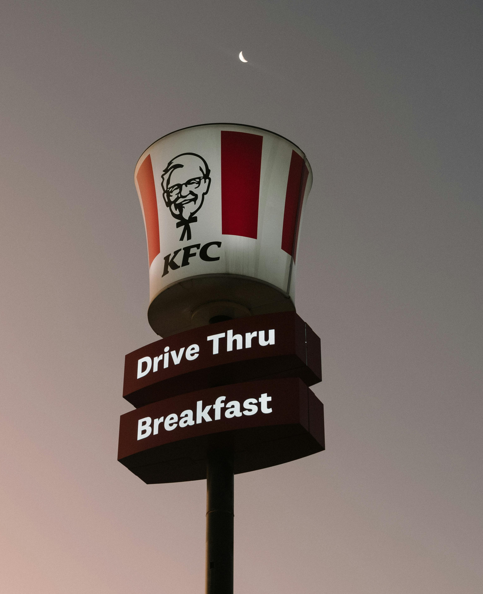

The Colonel — aka Harland Sanders — was born Sept. 9, 1890, on a farm near Henryville, Indiana. After serving in the U.S. Army and trying careers like a firefighter and insurance salesperson, he started running service stations in Kentucky.
There, he perfected his secret recipe of 11 herbs and spices and the pressure cooker method. Today, we serve delicious fried chicken to millions of families worldwide.
Back Home
In 1930, Colonel Sanders began cooking for travelers at his service station in Corbin, Kentucky. His meals became so popular that he moved across the street to a larger restaurant and motel. By 1936, Kentucky Governor Ruby Laffoon commissioned him as a Kentucky Colonel — the title he carried for life.
In 1952, at age 62, the Colonel began franchising his recipe. His first franchise sale went to Pete Harman in Salt Lake City, Utah. Together they coined the name "Kentucky Fried Chicken." The secret blend of 11 herbs and spices remains locked away to this day — only a handful of people know the full recipe.
KFC expanded rapidly across the United States and then overseas. By 1964, there were over 600 franchised outlets. The Colonel sold the company for $2 million but stayed on as a brand ambassador. KFC entered international markets including the UK, Canada, Australia, and South Africa, becoming a global fast-food icon.
Today KFC operates in over 145 countries with more than 29,000 restaurants worldwide. While the menu has grown to include burgers, wraps, and sides, the Original Recipe chicken remains the heart of everything we do. We continue to honor the Colonel's legacy of hard work, quality ingredients, and hospitality.
Every piece of chicken is freshly prepared with the Colonel's original recipe. No shortcuts, no compromises.
We believe in feeding communities and supporting local initiatives through our restaurants worldwide.
From the pressure cooker to digital ordering, we constantly evolve while staying true to our roots.